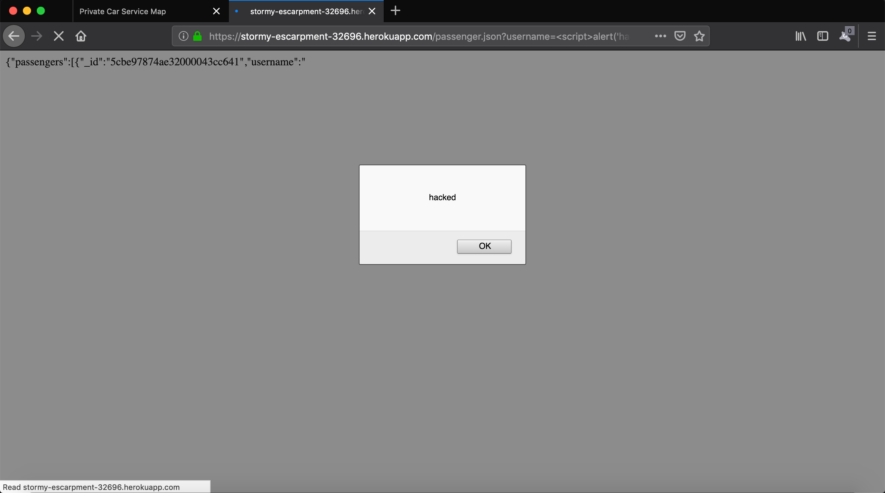

I was hired by Vichka Fonarev (the "Target") to assess the security of a web application. The application is used in conjunction with a private car service. The client side displays a map of passengers and vehicles and enables the submission of location data regarding vehicles or passengers using the application. The application allows passengers to find nearby vehicles which can pick them up and, alternatively, it allows drivers/vehicles to find nearby passengers which they may be able to service. On the server side, via a POST route, the application takes a username, latitude, and longitude as inputs and returns the usernames, latitudes, and longitudes of nearby passengers (if a vehicle was inputted)or vehicles (if a passenger was inputted) that were active within the last three minutes. The application also allows users to obtain information about passengers via one GET route while allowing users to view a list of stored vehicles and information about them via another GET route.
To test the application, I utilized curl in conjunction with a two-step method that was recommended by Ming Chow. First, after conducting initial research on types of attacks and how one might test for the associated vulnerabilities, I utilized curl to send information to the Target's MongoDB and then used the Target's GET pathways to test for additional vulnerabilities. In other words, I conducted a black box test first. Upon completing this, I then obtained the Target's source code to confirm the results of my black box testing, which is known as a white box test. This two step method (1. black box test 2. white box test) is how I approached my assessment.
I identified a total of four (4) security/privacy vunerabilities with the Target's code. These were as follows: Database Injection, Cross-Site Scripting (XSS), Security Misconfiguration, and Sensitive Data Exposure. A Database Injection occurs when untrusted data is sent from the application to a database. In this case, the untrusted data is inputted by the user (via curl) and posted to the database in question (mongolab). A malicious input typically consists of javascript code which can be utilized by a bad actor to accomplish a variety of tasks, which are outlined in the next section. This flaw was easily identified by the presence of javascript code in the database collection which contains passenger information. According to OWASP, XSS flaws are among the most common vulnerabilities, and occur when applications fail to properly escape or validate content supplied by the user. As a result, malicious inputs can be sent to the browser. In this case, the flaw was found in the GET /passenger.json route, where a user can reference malicious inputs, which were stored in the database as a result of the Database Injection flaw, in the URL of the page (https://stormy-escarpment-32696.herokuapp.com/passenger.json). In testing for this flaw, I was able to successfully execute an alert box script from the URL, proving the existence of the application's vulnerability to XSS. The Security Misconfiguration in question involves cross-origin resource sharing (CORS), which is, plainly, the ability for websites to utilize resources from different domains than their own. For our purposes it is important to know that enabling CORS allows for Assignment 3 to work in conjunction with Assignment 2 and, thus, it allows for the application to function. However, the Target's particular configuration for CORS does not only allow for the flow of resources between Assignment 2 and Assignment 3, it essentially makes the resources in question public. This may prove problematic if these resources contain sensitive information. Lastly, the Sensitive Data Exposure that was uncovered during my assessment addresses the lack of data encryption of user-inputs in the application. While encryption may be deemed unnecessary due to the nature of data being stored (usernames, locations, and timestamps for passengers and vehicles are not typically compromising or very sensitive) it is nonetheless wise to take precautions by encrypting stored data. Please read on to get a more in-depth look into my assessment of the Target's web application.
ISSUE 1: DATABASE INJECTION
Location:
This issue appears in the MongoDB (MongoLab) used in conjunction with heroku (or, if testing locally, in the local MongoDB). Within the code, the problem area is within the POST route (/rides) as this is where user inputs are taken in.
Severity:
The severity level of this vulnerability is HIGH because injection of hostile code into a database may result in the loss or corruption of stored data, as well as a complete takeover of the host, potentially. This vulnerability, after all, allows bad actors to inject any sort of script into the database. This vulnerability may also open the application up to other vulnerabilities, such as Cross-Site Scripting (XSS).
Issue Description:
I found this issue by black box testing the POST route with curl. This route takes in a user-inputted username, latitude, and longitude, as mentioned previously. When inputting the username field, one can pass a script through as a username. I was able to confirm this issue by accessing the Target's mongolab, where the script was successfully stored. Please see the images in the next subheading for more context. I was aided in my testing by the following resource: https://www.softwaretestinghelp.com/javascript-injection-tutorial/
Proof of Vulnerability:
Resolution:
To protect against exploitation of such a vulnerability, the user may do the following (aided by OWASP): 1) properly implement escaping as to prevent interpretation of code included in inputs (i.e. username should only take in reasonable USERNAMES; it should not interpret javascript code) 2) stricter whitelist input validation 3) avoid use of interpreters/APIs that utilize potentially faulty/compromisable interpreters.
ISSUE 2: Cross-Site Scripting (XSS)
Location:
This issue stacks upon the Database Injection issue (Issue 1 allows for the exploitation this issue). It appears in the GET /passenger.json route within index.js, as well as in its corresponding URL, https://stormy-escarpment-32696.herokuapp.com/passenger.json.
Severity:
The severity level of this vulnerability is MEDIUM due to a combination of its prevalence and potential impact. According to OWASP's 2013 Top 10 List, XSS is the most common web application security flaw. Per the Top 10 List as well as the COMP20 supplementary notes on Web Security, bad actors may utilize an XSS vulnerability to hijack user sessions, redirect users to malicious sites, steal cookie information, and, as Ming put it, just display annoying messages to users. That being said, this XSS vulnerability allows for "stored" XSS attacks, which are considered to be the more dangerous of the two XSS attack types (the other being "reflected" XSS) because the previously-stored data persists.
Issue Description:
I found this issue by black box testing the previously mentioned GET route. This involved inputting usernames into the aforementioned URL which reference documents containing javascript code, which were previously injected into the database via the Database Injection vulnerability. By referencing this "username" script, the code is executed in the browser. In the case of my testing, I referenced a username containing a script which displays an alert box containing the word "hacked".
Proof of Vulnerability:

Resolution:
Per OWASP, XSS vulnerabilities can typically be resolved by properly escaping untrusted data dependent on where the data will be placed (i.e. data to be inputted into the HTML body, an attribute, a script, etc.). Whitelists also help protect against such attacks; while the Target had a whitelist for vehicle inputs, there was no whitelist for passenger inputs and, as a result, the application became open to this vulnerability. OWASP also mentions the potential to protect against XSS attacks through the use of auto-sanitization libraries that assist in ensuring that user inputs comply with the application's rules. Additionally, OWASP points to the implementation of Content Security Policy (CSP), which is a W3C specification that allows restriction of resource loading; one of CSP's directives focuses on the prevention of reflected XSS, though there is no explicit mention of protection against stored XSS attacks.
ISSUE 3: Security Misconfiguration
Location:
This issue was found in lines 35-39 of the Target's index.js file. While it falls under Security Misconfiguration in OWASP's Top 10 list, the vulnerability in question pertains to Cross-Origin Resource Sharing (CORS) specifically.
Severity:
The severity of this vulnerability is LOW (in this case) due to the nature of the data that is at risk of compromise in the scope of the Target's application. In general, a CORS vulnerability of this nature may vary in severity due to the ability for bad actors to obtain sensitive information by exploiting it and the application's user(s). Fortunately, the only data at risk of compromise here is the current location and name of a passenger or vehicle at a particular time, so, in my opinion, this issue is of a LOW severity in this case but may be of HIGH severity in cases where data is more sensitive.
Issue Description:
As mentioned previously the issue was found in lines 35-39 of the Target's index.js file. These lines concern CORS and, specifically, they involve the setting of "Access-Control-Allow-Origin" to "*". This is generally problematic because setting access control to the wildcard character "*" essentially makes resources public.
Proof of Vulnerability:
Resolution:
To resolve this issue, it may be best to reconfigure "Access-Control-Allow-Origin" and set it solely to domains that the Target trusts. This would prevent the application from accepting requests/sharing resources with potentially malicious websites.
ISSUE 4: Sensitive Data Exposure
Location:
This issue was found in the POST /rides route within the Target's index.js file as this is where inputs are taken in.
Severity:
The severity of this vulnerability is LOW due to the nature of the data that is at risk of compromise in the scope of the Target's application. Generally speaking, the severity of such an issue may vary from LOW to HIGH depending on the type of data being stored and, perhaps, the risk tolerance of the application's user base. In this case, users risk bad actors obtaining their username and location coordinates at a certain point in time. For most, this would likely not matter much.
Issue Description:
This issue was discovered after conducting the necessary testing to obtain Issues 1 and 2. After these two issues were found and diagnosed, it was clear that the data being stored was not being encrypted in any way. As a result, users risk the interception/exposure of this data by bad actors.
Proof of Vulnerability:


Resolution:
To address this vulnerability, the Target can encrypt all data inputs (using javascript) as they are added to their respective collections within the database. As the application only displays the last three minutes of data, data that is older than three minutes may also be discarded if it will no longer be of use. Analysis aided by OWASP.
The Target, Vichka Fonarev, should take steps to remedy the Database Injection vulnerabiity immediately as this vulnerability is the highest-priority/highest-severity issue that was discovered. By remedying this vulnerability, the Target will reduce the severity of not only the potential issues discussed regarding Database Injection, but also their exposure to the second vulnerability: XSS. This is because prevention of Database Injection makes a "stored" XSS attack much more difficult, if not impossible, to execute on the Target's application. Next, the Target should take the aforementioned steps to better protect against XSS attacks. In addition to what was mentioned, the Target may want to replace any symbols that may be misinterpreted as code (i.e. <, >, etc.) with text (i.e. <,>, etc.) The CORS error should also be addressed even though it is of lower priority. Lastly, the addressing of the Sensitive Data Exposure error is up to the discretion of the Target bit, that being said, it is always better to be safe than sorry.